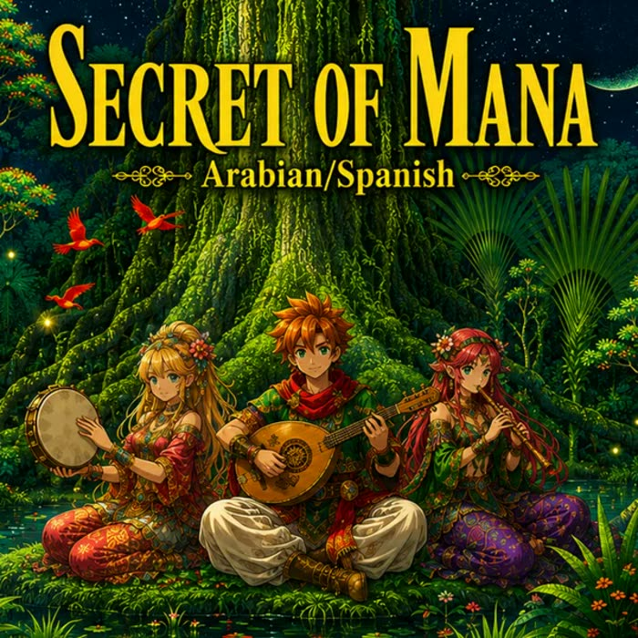

Secret of Mana - Arabian Spanish
Arabian and Spanish fusion reimagining the music of Secret of Mana, the 1993 Super Nintendo action RPG. 28 tracks with 20-second previews.
Get this album- 1A bell is tolling
- 2A Curious Tale
- 3A Wish
- 4Calm before the storm
- 5Dancing Animals
- 6Did you see the ocean
- 7Distant thunder
- 8Eternal recurrence
- 9Fear of the Heavens
- 10Flight into the unknown
- 11Fond memories
- 12I closed my eyes
- 13I wont forget
- 14Into the Thick of it
- 15It happened late one evening
- 16Leave time for love
- 17Phantom and rose
- 18Prophecy
- 19Secret of the Arid Sands
- 20Spirit of the night
- 21The Color of the Summer Sky
- 22The dark star
- 23The legend
- 24The Little Sprite
- 25The wind never ceases
- 26Together Always
- 27What the forest taught me
- 28Whisper and Mantra